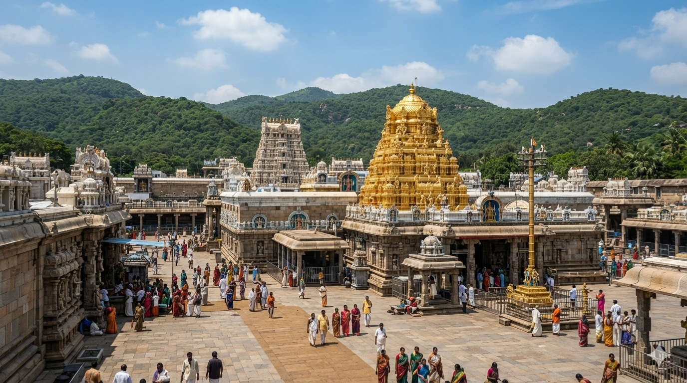

- VENKATESWARA -



The main sanctum sanctorum (garbhagudi) of the Tirumala Venkateswara Temple is known as the Ananda Nilayam, crowned by a famous three-tiered golden dome called the Ananda Nilaya Divya Vimanam. Inside this sacred inner chamber, the towering, self-manifested (Swayambhu) stone idol of Lord Venkateswara (Mula Beram) stands facing east, adorned with a grand gold crown, a camphor namam, and holding the conch and discus, with Goddess Lakshmi residing on his chest. Alongside the main deity, the sanctum houses smaller sacred icons like the silver Bhoga Srinivasa, Koluvu Srinivasa, Ugra Srinivasa, and metal idols of Rama, Sita, Lakshmana, Krishna, and Rukmini. Only ordained hereditary priests (Archakas) are allowed inside the garbhagudi to perform daily worship according to the strict Vaikhanasa Agama tradition, while devotees view the Lord from outside the golden threshold known as the Bangaru Vakili.
Lord Venkateswara Swamy’s lower right hand is held in the Varada Hasta Mudra, a sacred boon-giving posture in which His open palm faces outward and points directly downward toward His lotus feet. This gesture symbolizes divine grace, mercy, and the fulfillment of devotees' righteous wishes. By pointing to His feet, the Lord conveys a profound spiritual message that complete surrender and taking refuge at His lotus feet is the ultimate path to liberation from worldly suffering and the cycle of rebirth. Additionally, according to temple tradition at Tirumala, the sacred word "Sham" (symbolizing refuge and surrender) is inscribed in diamonds on this right palm, further reinforcing the reassurance that He protects and uplifts all who seek His shelter.


Lord Venkateswara Swamy’s lower left hand rests gracefully on His left hip in the Kati Hasta posture, also known as Katyavalambita Mudra, which symbolizes divine assurance, stability, and protection. Through this relaxed yet authoritative stance, the Lord conveys a comforting message to His devotees that if they take refuge at His lotus feet, the vast and turbulent ocean of worldly troubles and cycles of rebirth (Samsara) will shrink to mere knee or waist level. Combined with His right hand pointing to His feet, this gesture reassures followers that they need not fear life's hardships, as He personally stands ready to uplift and carry them safely through every challenge.

The Moolavirat is the main, immovable stone deity of Lord Sri Venkateswara Swamy residing inside the sacred sanctum sanctorum (Garbha Griha) of the Tirumala temple. Believed to be Swayambhu (self-manifested) rather than sculpted by human hands, the majestic black stone idol stands gracefully on a lotus pedestal beneath a golden arch (Prabhavali). Adorning a towering diamond-studded crown (Kireetam) and a broad white camphor Thirunamam that gently shields His powerful, compassionate gaze, the Lord holds the sacred conch (Sankham) and discus (Chakram) in His upper hands. His lower right hand extends downward in the boon-giving Varada Hasta posture pointing toward His lotus feet as the ultimate refuge, while His lower left hand rests firmly on His hip in the reassuring Kati Hasta stance, promising devotees that He will effortlessly carry them across the ocean of worldly troubles.